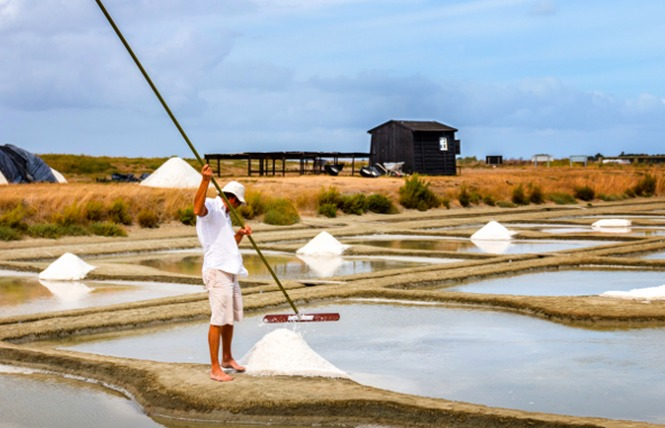
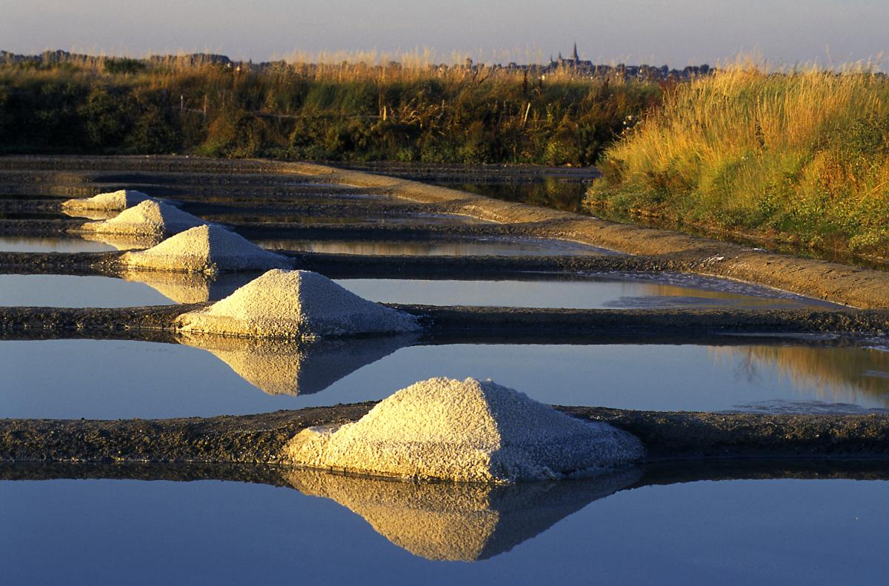

Les marais salants guérandais
Vous souhaitez découvrir des paysages uniques et magnifiques ? Venez visiter les marais salants guérandais situé à quelques
minutes en voiture de
La Baule. Vous y découvrirez l’histoire des
marais salants, le travail du
paludier, mais aussi la faune et la flore environnante. Entre amis ou en famille profitez d’une promenade
avec un guide ou seuls pour découvrir ce milieu naturel préservé. Vous découvrirez des paysages d’exception qui
changent du tout au tout en fonction du moment de la journée ou des saisons. Ces 2000 hectares de
marais répondent au label « Site Remarquable du Goût » depuis 1996 et bénéficient de protections réglementaires
telles que Natura 2000 et RAMSAR. Chaque année, grâce à des techniques de production millénaires, le travail
des
paludiers permet de
récolter entre 8000 et 12000 tonnes de
gros sel et 200 à 300 tonnes de
fleur de sel.
Les paludiers et leurs outils

Guérande compte dans ses rangs entre 280 et 300
paludiers dont 10 femmes. Être
paludier c’est garantir un produit exceptionnel grâce à un savoir faire ancestral qui se transmet de
générations en générations. Leur technique unique qui n’incluent ni de mécanisation, ni de produits chimiques
permet au
sel de Guérande de jouir d’une qualité exceptionnelle et dans un même temps de sauvegarder un patrimoine
unique. Les
paludiers utilisent différents outils pour la
récolte qui ont peu changé avec le temps. La majorité de ces outils sont en bois. L’outil le plus connu
est le las, il est muni d’un long manche flexible de 5 mètres de long qui permet la
récolte du gros sel. La lousse à
fleur de sel, comme son nom l’indique, sert à cueillir la
fleur de sel. Traditionnellement en bois, il existe maintenant des lousses élaborées à partir de matériaux
modernes qui répondent aux normes de qualité alimentaire.
La récolte

La
récolte du
sel se prépare tout au long de l’année et suit le rythme des saisons. Durant l’hiver, pour protéger les
salines du gel et des intempéries, le
paludier les recouvre d’eau. Cette saison est exclusivement réservée à l’entretien des
marais : curage des vasières, entretien des talus, nettoyage des chenaux d’alimentation… Le printemps
permet aux
paludiers de commencer à préparer les
marais. C’est le moment de vider les
salines et les bassins de l’eau de pluie accumulée pendant l’hiver. Après cette étape, c’est la vase
et les algues qu’il faut évacuer tout en reconstruisant les digues d’argile qui vont constituer le circuit
hydraulique de la
saline. Avec l’été commence la saison de la
récolte. En moyenne, un
paludier exploite 50 à 60 œillets soit une superficie de 3 à 4 hectares. La production obtenue est malheureusement
très variable car la production de sel dépend de l’ensoleillement, du vent mais aussi de la pluviométrie.
La fin de l’été et le début de l’automne sonne la fin de la
récolte. Il temps pour les
paludiers de mettre le
sel
à l’abri pour l’hiver et de reprendre un rythme de travail moins intensif jusqu’à la mi-novembre. A Guérande un
paludier
seul produit en moyenne 60 à 90 tonnes de
gros sel et 2 à 3 tonnes de
fleur de sel par an.